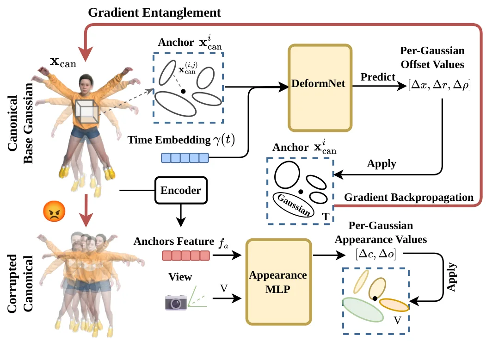
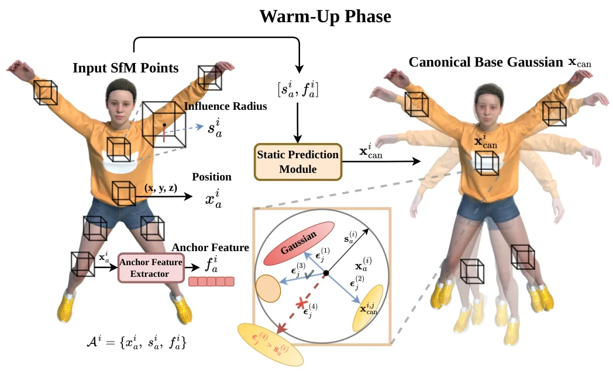
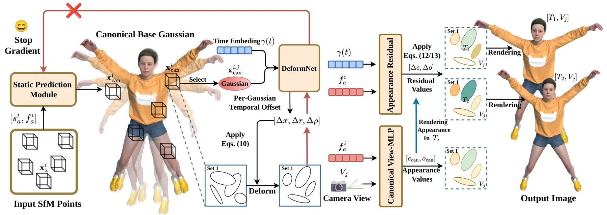
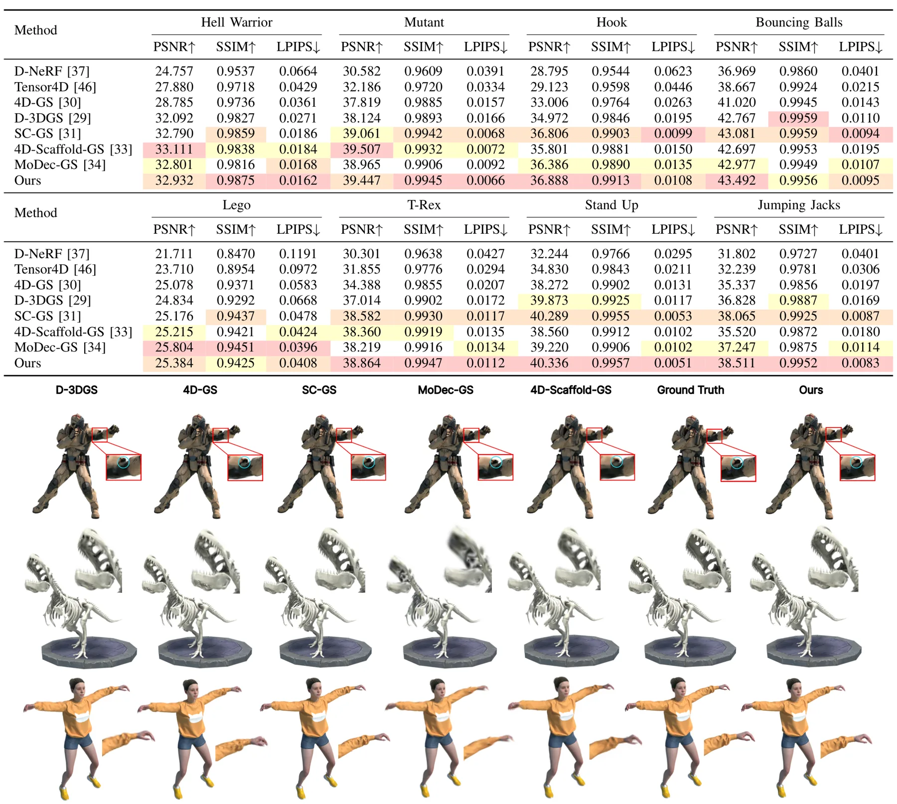
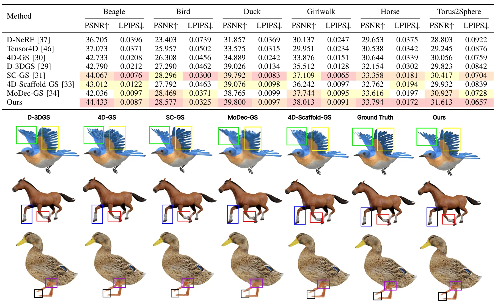
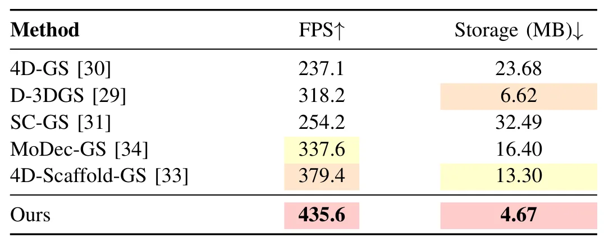
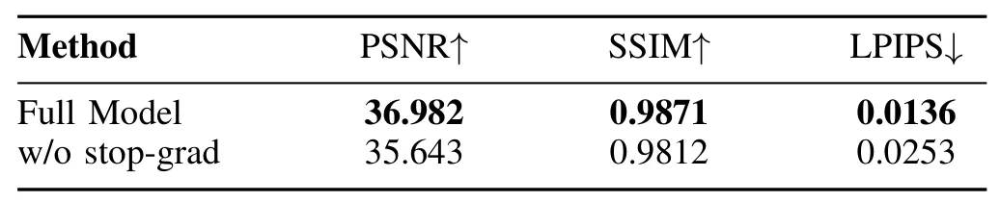

GrainGS：用于高效动态新视角合成的梯度解耦高斯泼溅GrainGS: Gradient-Decoupled Gaussian Splatting for Efficient Dynamic Novel View Synthesis
梯度解耦机制明确且给出质量、速度和存储数字；主要面向动态 NVS 而非在线 SLAM，真实场景的几何精度和训练成本待核查。
一句话工作总结
以锚点层级和逐高斯形变结合，并用 stop-gradient 稳定 canonical geometry，获得紧凑高速动态 3DGS。
摘要
GrainGS 将 hierarchical anchor scaffold 与 per-Gaussian deformation 结合，以平衡动态 3DGS 的局部运动表达、结构稳定性和紧凑性。static warm-up 先从所有时间戳观测建立 time-invariant canonical representation；联合训练时，stop-gradient 阻断经形变路径传回 canonical positions 的梯度，同时允许重建目标直接优化 canonical geometry。每个 Gaussian 独立预测位置、旋转与尺度的时序偏移，canonical-residual appearance decomposition 则表达逐帧光度变化。合成 benchmark 上平均 PSNR 为 36.98 dB，渲染速度 435.6 FPS，存储 4.67 MB。
Dynamic scene reconstruction with 3D Gaussian Splatting requires a balance between fine-grained motion modeling, structural stability, and compact representation. Existing per-primitive methods provide flexible local deformation but often suffer from redundant primitive growth, while anchor-based methods improve spatial regularity at the cost of suppressing locally varying motion. To address these issues, we present GrainGS, a dynamic Gaussian framework that combines a hierarchical anchor scaffold with per-Gaussian deformation. A static warm-up stage first establishes a time-invariant canonical representation from observations across all timestamps. During joint training, a stop-gradient operation blocks the deformation-mediated gradient pathway to the canonical positions while preserving their direct refinement through the reconstruction objective. Each Gaussian then predicts independent temporal offsets for position, rotation, and scale, enabling detailed local motion within a structurally constrained scaffold. A canonical-residual appearance decomposition further models frame-dependent photometric changes without forcing them into geometric deformation. Experiments on synthetic monocular and real-world multiview benchmarks show that GrainGS achieves high reconstruction quality, real-time novel view synthesis, and compact storage. Under the synthetic benchmark setting, it reaches an average peak signal-to-noise ratio of 36.98 decibels, renders at 435.6 frames per second, and requires 4.67 megabytes of storage.
中文解读摘录
- 作者：Jiahao He, Yihua Shao, Zhengkai Zhao, Pan Gao, Fei Ma, Jingcai Guo, Hao Tang, Nicu Sebe
- 价值判断：在 anchor-based 结构稳定性和 per-Gaussian 局部运动自由度之间折中，并用 gradient decoupling 防止形变路径破坏 canonical geometry。
- 技术要点：static warm-up 建立跨时间 canonical representation；联合训练时以 stop-gradient 阻断 deformation-mediated gradient 到 canonical positions，同时保留重建损失的直接优化；各 Gaussian 独立预测位置、旋转和尺度时序偏移，并以 canonical-residual appearance decomposition 分离光度变化。
- 关键结果：合成 benchmark 平均 PSNR 36.98 dB、渲染 435.6 FPS、存储 4.67 MB。它属于离线动态场景重建/NVS，不是在线 SLAM，需核查训练时间与真实场景几何稳定性。
- 链接：arXiv · PDF
图表/页面预览

{kind=link}

{kind=link}

{kind=link}

{kind=link}

{kind=link}

{kind=link}

{kind=link}
